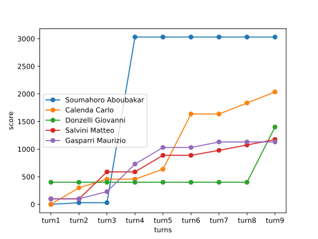

<div class="tab-pane fade mx-3 p-2" id="nav-Graphs" role="tabpanel" aria-labelledby="nav-Graphs-tab">
    <h3 class="my-3 display-6">Graphs</h3>

    <h4 class="my-3 display-7"><b>About all turns</b></h4>
    <figure class="figure">
        
        <figcaption class="figure-caption">Points awarded at each turn</figcaption>
    </figure>

    <h4 class="my-3 display-7"><b>Politicians graph</b></h4>
    <div id="politiciansGroupsImages" class="carousel slide pb-3 pt-2" data-bs-ride="carousel">
        <div class="carousel-inner">
            <div class="carousel-item active">
                <div class="row">
                    <div class="col">
                        
                    </div>
                    <div class="col">
                        
                    </div>
                </div>
            </div>
            <!-- TODO: Generalizzare questo 14 -->
            {% for i in range(2, numberOfGraphs, 2) %}
            <div class="carousel-item">
                {% if i == numberOfGraphs - 1%}
                <div class="row">
                    <div class="col">
                        
                    </div>
                    <div class="col">
                    </div>
                </div>
                {% else %}
                <div class="row">
                    <div class="col">
                        
                    </div>
                    <div class="col">
                        
                    </div>
                </div>
                {% endif %}
            </div>
            {% endfor %}
        </div>
        <button class="carousel-control-prev" type="button" data-bs-target="#politiciansGroupsImages"
            data-bs-slide="prev">
            <span class="carousel-control-prev-icon" aria-hidden="true"></span>
            <span class="visually-hidden">Previous</span>
        </button>
        <button class="carousel-control-next" type="button" data-bs-target="#politiciansGroupsImages"
            data-bs-slide="next">
            <span class="carousel-control-next-icon" aria-hidden="true"></span>
            <span class="visually-hidden">Next</span>
        </button>
    </div>
</div>